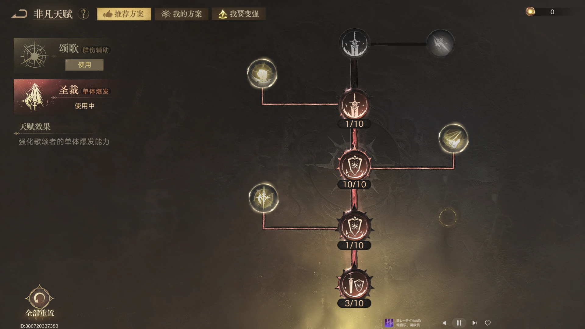
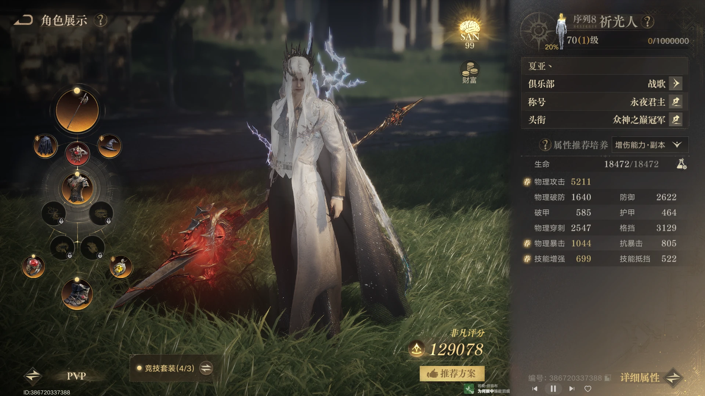
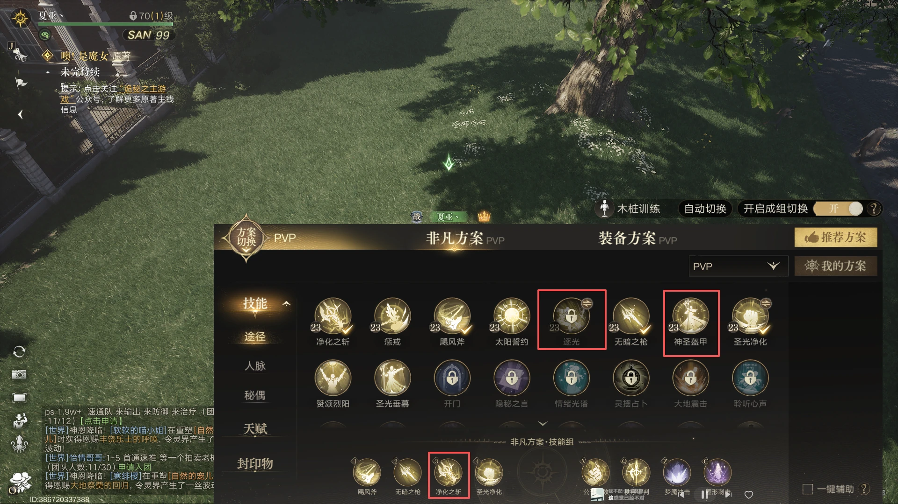
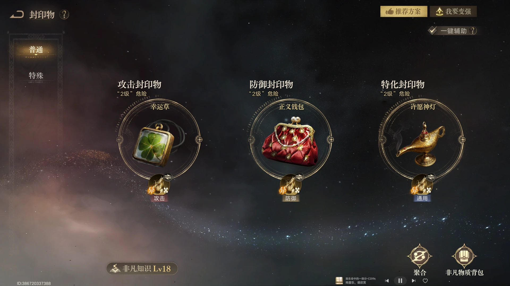
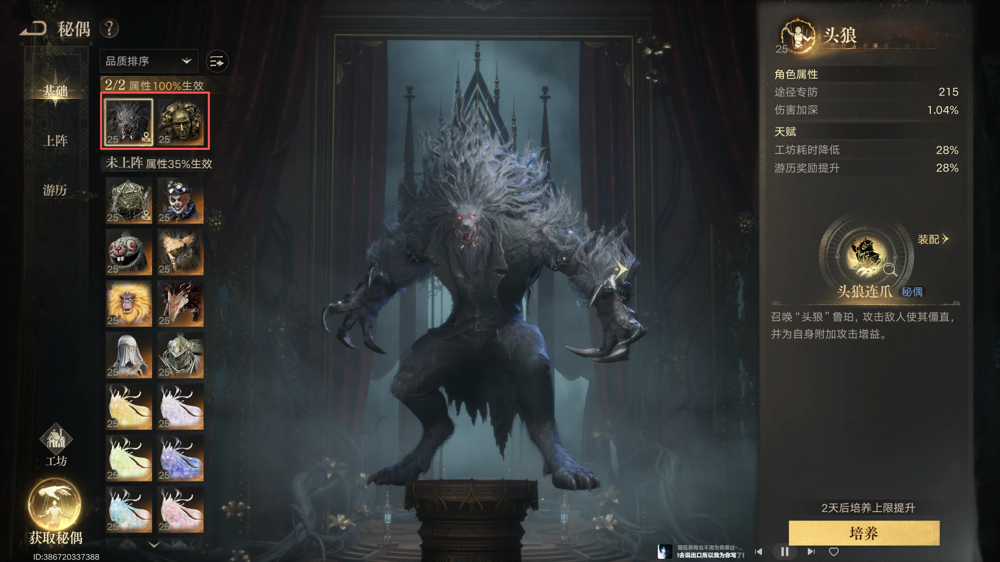
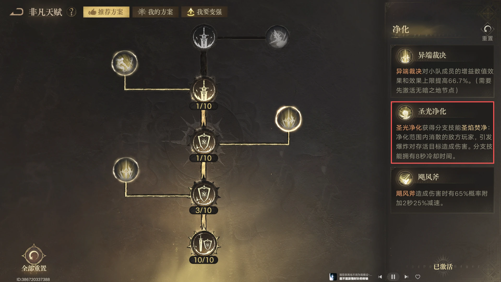
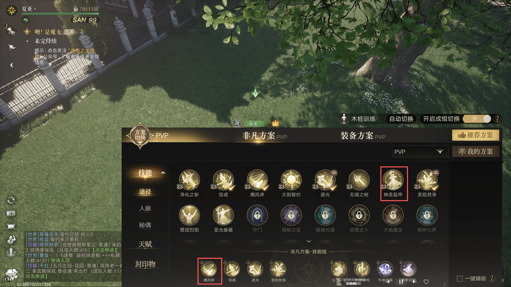

天赋点
先完成序列 8 的扮演任务，再按自身面板选择有效属性更多的天赋节点。

先完成序列 8 扮演任务
序列 8 开放后，先把序列 8 的扮演任务完成到 20%，拿够天赋点。当前阶段已经可以调整属性，不必再只看哪个节点分数高就带哪个。
按面板短板选择节点
点天赋前，先查看自身穿刺和格挡，优先补三项属性中更低的一项。还要注意目标属性在三个天赋节点中的排序：如果需要的属性排位较低，说明该节点提供的有效属性较少，换一个节点即可。
装备选择
64 装等阶段先把独珍三件套穿齐，再根据面板补关键属性。

优先穿齐独珍三件套
64 装等装备已经拿到不少时，优先把独珍三件套全部穿上，再根据自身面板补齐属性。装备选择的第一目标是让关键属性达标，不要为了单件装备的分数牺牲整体配置。
属性与防御方向
圣光进化提高增伤，穿刺与格挡按面板短板补齐，先满足 PVP / GVG 的实战阈值。
圣光进化与增伤
序列 8 开启圣光进化后，会获得额外 5% 增伤效果。暴击和穿刺的提升，会根据自身面板按比例放大，因此面板越高，进化带来的收益越明显。
穿刺目标
序列 8 打 PVP / GVG 不必把穿刺堆得过高，1800 以上即可；配合 buff 后，轻松达到约 2500，穿刺率可达到 80% 以上。
格挡与技能抵挡
今天开放衣服洗恩赐后，实战向防御可以优先寻找三个格挡和一个技能抵挡。只需要四金词条的玩家按这个方向凑齐即可；只需要三金的玩家同样优先选择格挡。
技能组
GVG 以净化之斩为默认思路，小规模场景再按队伍需求切换逐光或圣光。

GVG 技能组
GVG 默认可以携带净化之斩。6v6 或其他小规模场景可以改带逐光，但需要同步调整非凡天赋。12v12 可以携带圣光，6v6 同样可以使用，最终按队伍需求和个人熟练度选择。
封印物选择
特殊封印物优先神灯，攻击封印物再根据暴击与战斗规模调整。

特殊封印物优先神灯
特殊封印物优先推荐神灯，6v6 和 12v12 都很好用。当前战斗比较依赖 buff，因此神灯提供的技能刷新非常重要。
攻击封印物按场景选择
如果自身暴击较高，可以考虑公证书。6v6 场景也可以尝试斧子技能组，换下旋风斧；但暴风战斧容易让技能循环变得滞涩。GVG 场景推荐公证书与新焚决。
秘偶上阵
优先携带剥面人和头狼；破甲未达到目标时，改用星之虫守秘补足。

常规上阵
当前优先携带剥面人和头狼。
破甲不足时替换头狼
如果自身破甲没有达到 300 左右，就把头狼替换为星之虫守秘。
天赋切换
技能组切换时同步调整非凡天赋，避免技能与天赋方向不一致。

逐光需要同步调整天赋
6v6 或小规模场景改带逐光时，需要同步调整非凡天赋；技能组与天赋方向保持一致，实战循环会更稳定。
小号 GVG 分支
序列 8 的新分支技能圣焰焚净，为小号玩家提供更容易成型的 GVG 方案。

圣焰焚净降低成型门槛
序列 8 开放了新的分支技能圣焰焚净。对于装备和属性还在成长中的小号玩家，这是 GVG 场景里的关键技能，可以降低对无暗和净化之斩的依赖，直接参与实体灼烧。
以圣焰焚净为核心调整技能组
技能组以圣焰焚净为核心，搭配辅助和控制技能。如果自身不容易存活，可以把旋风斧替换成盔甲。其余封印物和秘偶的选择，沿用上文的通用思路即可。